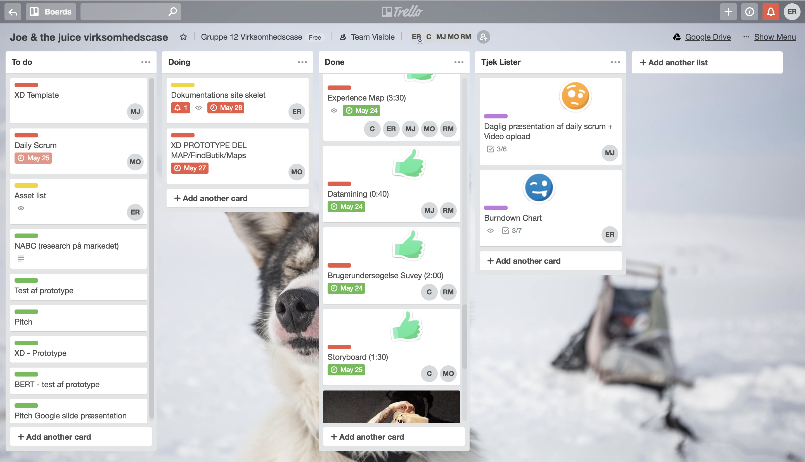

Daily scrum
Torsdag d. 24 maj

Hvad vi har lavet siden sidste Daily Scrum
Oprette Gidhub
Link til gruppekontrakt afleveret
BMC
Burndown Chart excel er oprettet
Bruger interviews
Bruger undersøgelse
Moodboard
Målgruppebeskrivelse
Alle har lavet design charette eksempel
Hvad vi har planlagt at lave mellem nu og næste Daily Scrum
Experience map
Daily scrum uploads
Burndown chart opdateres
Feature-set liste
Styletile
Storyboard
Brugerrejser
Datamining
Hvilke forhindringer står i vejen for, at vi når det vi har planlagt?
Arbejde
Fredag d. 25 maj

Hvad vi har lavet siden sidste Daily Scrum
Styletile?
Feature liste?
Brugerrejser
Storyboard
Brugerundersøgelse
Datamining
Expirience map
Daily Scrum
Personas
Design Charette
Hvad vi har planlagt at lave mellem nu og næste Daily Scrum
Fotostil/Find billeder/Asset liste
Skitser på App ikon
Papir prototype
Ikon for App
XD prototype (delt op i forskellige afsnit og laves til Mandag)
Hvilke forhindringer står i vejen for, at vi når det vi har planlagt?
Arbejde, Champions league.
Mandag d. 28 maj

Hvad vi har lavet siden sidste Daily Scrum
XD prototype dele.
Fotostil.
Opdatere dokumentationssite.
Hvad vi har planlagt at lave mellem nu og næste Daily Scrum
XD prototype.
Linke ptototype sammen.
Pitch.
SLide show til fremlæggelse.
NABC.
Hvilke forhindringer står i vejen for, at vi når det vi har planlagt?
Ingen forhindringer, forhåbenligt.